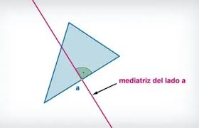

Plano cartesiano
Plano cartesiano
Elplano cartesiano está formado por dos rectas numéricas perpendiculares, una horizontal y otra vertical que se cortan en un punto. La recta horizontal es llamada eje de las abscisas o de las equis (x), y la vertical, eje de las ordenadas o de las yes, (y); el punto donde se cortan recibe el nombre de origen.
El plano cartesiano tiene como finalidad describir la posición de puntos, los cuales se representan por sus coordenadas o pares ordenados.
Para localizar puntos en el plano cartesiano se debe llevar a cabo el siguiente procedimiento:
1. Para localizar la abscisa o valor de x, se cuentan las unidades correspondientes hacia la derecha si son positivas o hacia la izquierda si son negativas, a partir del punto de origen, en este caso el cero. 2. Desde donde se localiza el valor de x, se cuentan las unidades correspondientes (en el eje de las ordenadas) hacia arriba si son positivas o hacia abajo, si son negativas y de esta forma se localiza cualquier punto dadas ambas coordenadas.Para determinar las coordenadas de un punto o localizarlo en el plano cartesiano, se encuentran unidades correspondientes en el eje de las x hacia la derecha o hacia la izquierda y luego las unidades del eje de las y hacia arriba o hacia abajo, según sean positivas o negativas, respectivamente.
Lugar geométrico Lugar geométrico es el conjunto de puntos que cumplen una propiedad dada.

Algunos lugares geométricos son:
La Mediatriz de un segmento es el lugar geométrico de los puntos que equidistan de sus extremos.
La Bisectriz de dos rectas es el lugar geométrico de los puntos que equidistan de sus lados.
La Circunferencia de centro C y radio r es el lugar geométrico de los puntos cuya distancia al centro es r.

Vídeos para reforzar lo aprendido
Cuestionario para reforzar lo aprendido